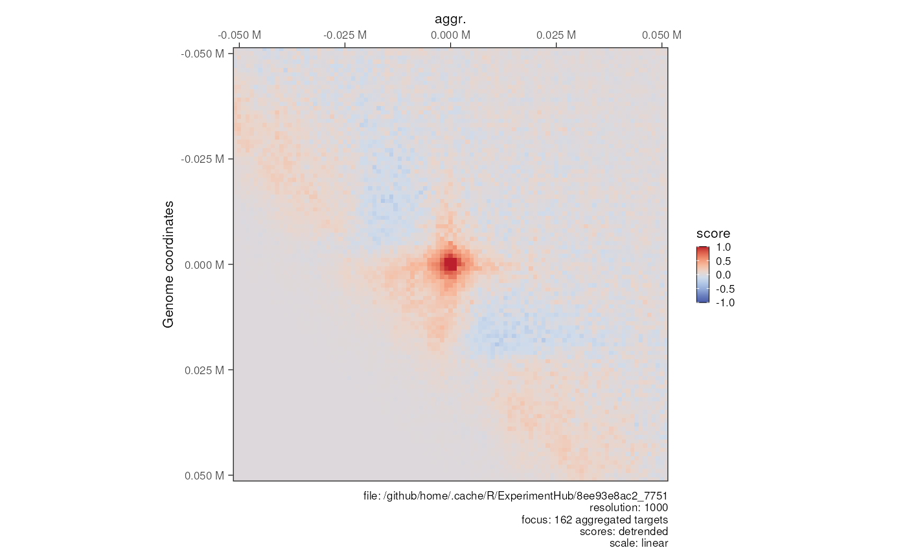
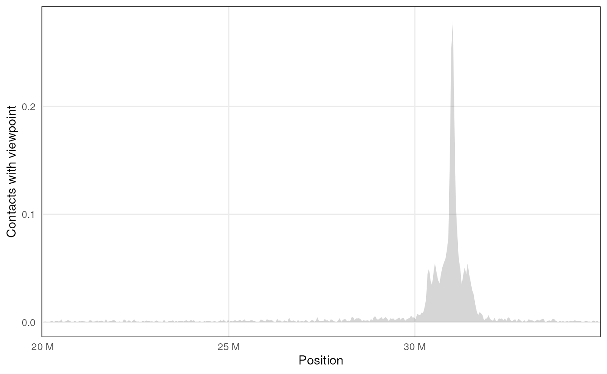

Introduction to HiContacts
Jacques Serizay
2023-11-21
Source:vignettes/HiContacts.Rmd
HiContacts.RmdCiting HiContacts
citation('HiContacts')
#> To cite package 'HiContacts' in publications use:
#>
#> Serizay J (2022). _HiContacts: Analysing cool files in R with
#> HiContacts_. R package version 1.3.2,
#> <https://github.com/js2264/HiContacts>.
#>
#> A BibTeX entry for LaTeX users is
#>
#> @Manual{,
#> title = {HiContacts: Analysing cool files in R with HiContacts},
#> author = {Jacques Serizay},
#> year = {2022},
#> note = {R package version 1.3.2},
#> url = {https://github.com/js2264/HiContacts},
#> }Basics: importing .(m)/cool files as
HiCExperiment objects
The HiCExperiment package provides classes and methods
to import an .(m)cool file in R. The HiContactsData package
gives access to a range of toy datasets stored by Bioconductor in the
ExperimentHub.
library(dplyr)
library(ggplot2)
library(HiCExperiment)
library(HiContacts)
library(HiContactsData)
library(rtracklayer)
#>
#> Attaching package: 'rtracklayer'
#> The following object is masked from 'package:AnnotationHub':
#>
#> hubUrl
library(InteractionSet)
#> Loading required package: SummarizedExperiment
#> Loading required package: MatrixGenerics
#> Loading required package: matrixStats
#>
#> Attaching package: 'matrixStats'
#> The following object is masked from 'package:dplyr':
#>
#> count
#>
#> Attaching package: 'MatrixGenerics'
#> The following objects are masked from 'package:matrixStats':
#>
#> colAlls, colAnyNAs, colAnys, colAvgsPerRowSet, colCollapse,
#> colCounts, colCummaxs, colCummins, colCumprods, colCumsums,
#> colDiffs, colIQRDiffs, colIQRs, colLogSumExps, colMadDiffs,
#> colMads, colMaxs, colMeans2, colMedians, colMins, colOrderStats,
#> colProds, colQuantiles, colRanges, colRanks, colSdDiffs, colSds,
#> colSums2, colTabulates, colVarDiffs, colVars, colWeightedMads,
#> colWeightedMeans, colWeightedMedians, colWeightedSds,
#> colWeightedVars, rowAlls, rowAnyNAs, rowAnys, rowAvgsPerColSet,
#> rowCollapse, rowCounts, rowCummaxs, rowCummins, rowCumprods,
#> rowCumsums, rowDiffs, rowIQRDiffs, rowIQRs, rowLogSumExps,
#> rowMadDiffs, rowMads, rowMaxs, rowMeans2, rowMedians, rowMins,
#> rowOrderStats, rowProds, rowQuantiles, rowRanges, rowRanks,
#> rowSdDiffs, rowSds, rowSums2, rowTabulates, rowVarDiffs, rowVars,
#> rowWeightedMads, rowWeightedMeans, rowWeightedMedians,
#> rowWeightedSds, rowWeightedVars
#> Loading required package: Biobase
#> Welcome to Bioconductor
#>
#> Vignettes contain introductory material; view with
#> 'browseVignettes()'. To cite Bioconductor, see
#> 'citation("Biobase")', and for packages 'citation("pkgname")'.
#>
#> Attaching package: 'Biobase'
#> The following object is masked from 'package:MatrixGenerics':
#>
#> rowMedians
#> The following objects are masked from 'package:matrixStats':
#>
#> anyMissing, rowMedians
#> The following object is masked from 'package:ExperimentHub':
#>
#> cache
#> The following object is masked from 'package:AnnotationHub':
#>
#> cache
cool_file <- HiContactsData('yeast_wt', format = 'cool')
#> see ?HiContactsData and browseVignettes('HiContactsData') for documentation
#> loading from cache
hic <- import(cool_file, format = 'cool')
hic
#> `HiCExperiment` object with 8,757,906 contacts over 12,079 regions
#> -------
#> fileName: "/github/home/.cache/R/ExperimentHub/8eca3e17cc_7751"
#> focus: "whole genome"
#> resolutions(1): 1000
#> active resolution: 1000
#> interactions: 2945692
#> scores(2): count balanced
#> topologicalFeatures: compartments(0) borders(0) loops(0) viewpoints(0)
#> pairsFile: N/A
#> metadata(0):Plotting matrices
Plot matrix heatmaps
The plotMatrix function takes a
HiCExperiment object and plots it as a heatmap.
Use the use.scores argument to specify which type of
interaction scores to use in the contact maps (e.g. count,
balanced, …). By default, plotMatrix() looks
for balanced scores. If they are not stored in the original
.(m)/cool file, plotMatrix() simply takes the
first scores available.
## Square matrix
plotMatrix(hic, use.scores = 'balanced', limits = c(-4, -1))
## Horizontal matrix
plotMatrix(
refocus(hic, 'II'),
use.scores = 'balanced', limits = c(-4, -1),
maxDistance = 200000
)Plot loops
Loops can be plotted on top of Hi-C matrices by providing a
GInteractions object to the loops
argument.
Note: Loops in .bedpe format can be imported in
R using the import() function, and converted into
GInteractions with the
InteractionSet::makeGInteractionsFromGRangesPairs()
function.
mcool_file <- HiContactsData('yeast_wt', format = 'mcool')
#> see ?HiContactsData and browseVignettes('HiContactsData') for documentation
#> loading from cache
loops <- system.file("extdata", 'S288C-loops.bedpe', package = 'HiCExperiment') |>
import() |>
makeGInteractionsFromGRangesPairs()
p <- import(mcool_file, format = 'mcool', focus = 'IV') |>
plotMatrix(loops = loops, limits = c(-4, -1), dpi = 120)Plot borders
borders <- system.file("extdata", 'S288C-borders.bed', package = 'HiCExperiment') |>
import()
p <- import(mcool_file, format = 'mcool', focus = 'IV') |>
plotMatrix(loops = loops, borders = borders, limits = c(-4, -1), dpi = 120)Plot aggregated matrices over features
aggr_centros <- HiContacts::aggregate(
hic, targets = loops, BPPARAM = BiocParallel::SerialParam()
)
#> Going through preflight checklist...
#> Parsing the entire contact matrice as a sparse matrix...
#> Modeling distance decay...
#> Filtering for contacts within provided targets...
plotMatrix(
aggr_centros, use.scores = 'detrended', limits = c(-1, 1), scale = 'linear',
cmap = bgrColors()
)
Arithmetics
Computing autocorrelated contact map
mcool_file <- HiContactsData('mESCs', format = 'mcool')
#> see ?HiContactsData and browseVignettes('HiContactsData') for documentation
#> loading from cache
hic <- import(mcool_file, format = 'mcool', focus = 'chr2', resolution = 160000)
hic <- autocorrelate(hic)
#>
scores(hic)
#> List of length 5
#> names(5): count balanced expected detrended autocorrelated
summary(scores(hic, 'autocorrelated'))
#> Min. 1st Qu. Median Mean 3rd Qu. Max. NA's
#> -0.499 -0.097 0.040 0.043 0.172 1.000 7739
plotMatrix(hic, use.scores = 'autocorrelated', limits = c(-1, 1), scale = 'linear')
Detrending contact map (map of scores over expected)
hic <- import(mcool_file, format = 'mcool', focus = 'chr18:20000000-35000000', resolution = 40000)
detrended_hic <- detrend(hic)
patchwork::wrap_plots(
plotMatrix(detrended_hic, use.scores = 'expected', scale = 'log10', limits = c(-3, -1), dpi = 120),
plotMatrix(detrended_hic, use.scores = 'detrended', scale = 'linear', limits = c(-1, 1), dpi = 120)
)
Summing two maps
mcool_file_1 <- HiContactsData('yeast_eco1', format = 'mcool')
#> see ?HiContactsData and browseVignettes('HiContactsData') for documentation
#> loading from cache
mcool_file_2 <- HiContactsData('yeast_wt', format = 'mcool')
#> see ?HiContactsData and browseVignettes('HiContactsData') for documentation
#> loading from cache
hic_1 <- import(mcool_file_1, format = 'mcool', focus = 'II:1-300000', resolution = 2000)
hic_2 <- import(mcool_file_2, format = 'mcool', focus = 'II:1-300000', resolution = 2000)
merged_hic <- merge(hic_1, hic_2)
hic_1
#> `HiCExperiment` object with 301,285 contacts over 150 regions
#> -------
#> fileName: "/github/home/.cache/R/ExperimentHub/8ec673256d7_7754"
#> focus: "II:1-300,000"
#> resolutions(5): 1000 2000 4000 8000 16000
#> active resolution: 2000
#> interactions: 9607
#> scores(2): count balanced
#> topologicalFeatures: compartments(0) borders(0) loops(0) viewpoints(0)
#> pairsFile: N/A
#> metadata(0):
hic_2
#> `HiCExperiment` object with 146,812 contacts over 150 regions
#> -------
#> fileName: "/github/home/.cache/R/ExperimentHub/8ec33e709d8_7752"
#> focus: "II:1-300,000"
#> resolutions(5): 1000 2000 4000 8000 16000
#> active resolution: 2000
#> interactions: 6933
#> scores(2): count balanced
#> topologicalFeatures: compartments(0) borders(0) loops(0) viewpoints(0)
#> pairsFile: N/A
#> metadata(0):
merged_hic
#> `HiCExperiment` object with 229,926 contacts over 150 regions
#> -------
#> fileName: "/github/home/.cache/R/ExperimentHub/8ec673256d7_7754"
#> focus: "II:1-300,000"
#> resolutions(5): 1000 2000 4000 8000 16000
#> active resolution: 2000
#> interactions: 9748
#> scores(2): count balanced
#> topologicalFeatures: ()
#> pairsFile: N/A
#> metadata(2): hce_list operationComputing ratio between two maps
hic_1 <- import(mcool_file_1, format = 'mcool', focus = 'II', resolution = 2000)
hic_2 <- import(mcool_file_2, format = 'mcool', focus = 'II', resolution = 2000)
div_hic <- divide(hic_1, by = hic_2)
div_hic
#> `HiCExperiment` object with 996,154 contacts over 407 regions
#> -------
#> fileName: N/A
#> focus: "II"
#> resolutions(1): 2000
#> active resolution: 2000
#> interactions: 60894
#> scores(6): count.x balanced.x count.by balanced.by balanced.fc balanced.l2fc
#> topologicalFeatures: ()
#> pairsFile: N/A
#> metadata(2): hce_list operation
p <- patchwork::wrap_plots(
plotMatrix(hic_1, use.scores = 'balanced', scale = 'log10', limits = c(-4, -1)),
plotMatrix(hic_2, use.scores = 'balanced', scale = 'log10', limits = c(-4, -1)),
plotMatrix(div_hic, use.scores = 'balanced.fc', scale = 'log2', limits = c(-2, 2), cmap = bwrColors())
)Despeckling (smoothing out) a contact map
hic_1_despeckled <- despeckle(hic_1)
hic_1_despeckled5 <- despeckle(hic_1, focal.size = 5)
p <- patchwork::wrap_plots(
plotMatrix(hic_1, use.scores = 'balanced', scale = 'log10', limits = c(-4, -1)),
plotMatrix(hic_1_despeckled, use.scores = 'balanced.despeckled', scale = 'log10', limits = c(-4, -1)),
plotMatrix(hic_1_despeckled5, use.scores = 'balanced.despeckled', scale = 'log10', limits = c(-4, -1))
)Mapping topological features
Chromosome compartments
mcool_file <- HiContactsData('yeast_wt', format = 'mcool')
#> see ?HiContactsData and browseVignettes('HiContactsData') for documentation
#> loading from cache
hic <- import(mcool_file, format = 'mcool', resolution = 16000)
# - Get compartments
hic <- getCompartments(hic, chromosomes = c('XV', 'XVI'))
#> Going through preflight checklist...
#> Parsing intra-chromosomal contacts for each chromosome...
#> Computing eigenvectors for each chromosome...
hic
#> `HiCExperiment` object with 8,757,906 contacts over 763 regions
#> -------
#> fileName: "/github/home/.cache/R/ExperimentHub/8ec33e709d8_7752"
#> focus: "whole genome"
#> resolutions(5): 1000 2000 4000 8000 16000
#> active resolution: 16000
#> interactions: 267709
#> scores(2): count balanced
#> topologicalFeatures: compartments(18) borders(0) loops(0) viewpoints(0)
#> pairsFile: N/A
#> metadata(1): eigens
# - Export compartments as bigwig and bed files
export(IRanges::coverage(metadata(hic)$eigens, weight = 'eigen'), 'compartments.bw')
export(
topologicalFeatures(hic, 'compartments')[topologicalFeatures(hic, 'compartments')$compartment == 'A'],
'A-compartments.bed'
)
export(
topologicalFeatures(hic, 'compartments')[topologicalFeatures(hic, 'compartments')$compartment == 'B'],
'B-compartments.bed'
)
# - Generate saddle plot
plotSaddle(hic)
Diamond insulation score and chromatin domains borders
# - Compute insulation score
hic <- refocus(hic, 'II:1-300000') |>
zoom(resolution = 1000) |>
getDiamondInsulation(window_size = 8000) |>
getBorders()
#> Going through preflight checklist...
#> Scan each window and compute diamond insulation score...
#> Annotating diamond score prominence for each window...
hic
#> `HiCExperiment` object with 146,812 contacts over 300 regions
#> -------
#> fileName: "/github/home/.cache/R/ExperimentHub/8ec33e709d8_7752"
#> focus: "II:1-300,000"
#> resolutions(5): 1000 2000 4000 8000 16000
#> active resolution: 1000
#> interactions: 18286
#> scores(2): count balanced
#> topologicalFeatures: compartments(18) borders(17) loops(0) viewpoints(0)
#> pairsFile: N/A
#> metadata(2): eigens insulation
# - Export insulation as bigwig track and borders as bed file
export(IRanges::coverage(metadata(hic)$insulation, weight = 'insulation'), 'insulation.bw')
export(topologicalFeatures(hic, 'borders'), 'borders.bed')Contact map analysis
Virtual 4C
mcool_file <- HiContactsData('mESCs', format = 'mcool')
#> see ?HiContactsData and browseVignettes('HiContactsData') for documentation
#> loading from cache
hic <- import(mcool_file, format = 'mcool', focus = 'chr18:20000000-35000000', resolution = 40000)
v4C <- virtual4C(hic, viewpoint = GRanges('chr18:31000000-31050000'))
plot4C(v4C, ggplot2::aes(x = center, y = score))
Cis-trans ratios
mcool_file <- HiContactsData('yeast_wt', format = 'mcool')
#> see ?HiContactsData and browseVignettes('HiContactsData') for documentation
#> loading from cache
hic <- import(mcool_file, format = 'mcool', resolution = 1000)
cisTransRatio(hic)
#> # A tibble: 16 × 6
#> # Groups: chr [16]
#> chr cis trans n_total cis_pct trans_pct
#> <fct> <dbl> <dbl> <dbl> <dbl> <dbl>
#> 1 I 186326 96738 283064 0.658 0.342
#> 2 II 942728 273966 1216694 0.775 0.225
#> 3 III 303980 127087 431067 0.705 0.295
#> 4 IV 1858062 418218 2276280 0.816 0.184
#> 5 V 607090 220873 827963 0.733 0.267
#> 6 VI 280282 127771 408053 0.687 0.313
#> 7 VII 1228532 335909 1564441 0.785 0.215
#> 8 VIII 574086 205122 779208 0.737 0.263
#> 9 IX 474182 179280 653462 0.726 0.274
#> 10 X 834656 259240 1093896 0.763 0.237
#> 11 XI 775240 245899 1021139 0.759 0.241
#> 12 XII 1182742 278065 1460807 0.810 0.190
#> 13 XIII 1084810 296351 1381161 0.785 0.215
#> 14 XIV 852516 256639 1109155 0.769 0.231
#> 15 XV 1274070 351132 1625202 0.784 0.216
#> 16 XVI 1070700 313520 1384220 0.774 0.226P(s)
# Without a pairs file
mcool_file <- HiContactsData('yeast_wt', format = 'mcool')
#> see ?HiContactsData and browseVignettes('HiContactsData') for documentation
#> loading from cache
hic <- import(mcool_file, format = 'mcool', resolution = 1000)
ps <- distanceLaw(hic)
#> pairsFile not specified. The P(s) curve will be an approximation.
plotPs(ps, ggplot2::aes(x = binned_distance, y = norm_p))
#> Warning: Removed 18 rows containing missing values (`geom_line()`).
# With a pairs file
pairsFile(hic) <- HiContactsData('yeast_wt', format = 'pairs.gz')
#> see ?HiContactsData and browseVignettes('HiContactsData') for documentation
#> loading from cache
ps <- distanceLaw(hic)
#> Importing pairs file /github/home/.cache/R/ExperimentHub/8ec7975dcee_7753 in memory. This may take a while...
plotPs(ps, ggplot2::aes(x = binned_distance, y = norm_p))
#> Warning: Removed 67 rows containing missing values (`geom_line()`).
plotPsSlope(ps, ggplot2::aes(x = binned_distance, y = slope))
#> Warning: Removed 67 rows containing missing values (`geom_line()`).
# Comparing P(s) curves
c1 <- import(
HiContactsData('yeast_wt', format = 'mcool'),
format = 'mcool',
resolution = 1000,
pairsFile = HiContactsData('yeast_wt', format = 'pairs.gz')
)
#> see ?HiContactsData and browseVignettes('HiContactsData') for documentation
#> loading from cache
#> see ?HiContactsData and browseVignettes('HiContactsData') for documentation
#> loading from cache
c2 <- import(
HiContactsData('yeast_eco1', format = 'mcool'),
format = 'mcool',
resolution = 1000,
pairsFile = HiContactsData('yeast_eco1', format = 'pairs.gz')
)
#> see ?HiContactsData and browseVignettes('HiContactsData') for documentation
#> loading from cache
#> see ?HiContactsData and browseVignettes('HiContactsData') for documentation
#> loading from cache
ps_1 <- distanceLaw(c1) |> mutate(sample = 'WT')
#> Importing pairs file /github/home/.cache/R/ExperimentHub/8ec7975dcee_7753 in memory. This may take a while...
ps_2 <- distanceLaw(c2) |> mutate(sample = 'Eco1-AID')
#> Importing pairs file /github/home/.cache/R/ExperimentHub/8ec6a73345b_7755 in memory. This may take a while...
ps <- rbind(ps_1, ps_2)
plotPs(ps, ggplot2::aes(x = binned_distance, y = norm_p, group = sample, color = sample))
#> Warning: Removed 134 rows containing missing values (`geom_line()`).
plotPsSlope(ps, ggplot2::aes(x = binned_distance, y = slope, group = sample, color = sample))
#> Warning: Removed 135 rows containing missing values (`geom_line()`).Session info
sessionInfo()
#> R Under development (unstable) (2023-11-14 r85524)
#> Platform: x86_64-pc-linux-gnu
#> Running under: Ubuntu 22.04.3 LTS
#>
#> Matrix products: default
#> BLAS: /usr/lib/x86_64-linux-gnu/openblas-pthread/libblas.so.3
#> LAPACK: /usr/lib/x86_64-linux-gnu/openblas-pthread/libopenblasp-r0.3.20.so; LAPACK version 3.10.0
#>
#> locale:
#> [1] LC_CTYPE=en_US.UTF-8 LC_NUMERIC=C
#> [3] LC_TIME=en_US.UTF-8 LC_COLLATE=en_US.UTF-8
#> [5] LC_MONETARY=en_US.UTF-8 LC_MESSAGES=en_US.UTF-8
#> [7] LC_PAPER=en_US.UTF-8 LC_NAME=C
#> [9] LC_ADDRESS=C LC_TELEPHONE=C
#> [11] LC_MEASUREMENT=en_US.UTF-8 LC_IDENTIFICATION=C
#>
#> time zone: UTC
#> tzcode source: system (glibc)
#>
#> attached base packages:
#> [1] stats4 stats graphics grDevices utils datasets methods
#> [8] base
#>
#> other attached packages:
#> [1] InteractionSet_1.31.0 SummarizedExperiment_1.33.0
#> [3] Biobase_2.63.0 MatrixGenerics_1.15.0
#> [5] matrixStats_1.1.0 rtracklayer_1.63.0
#> [7] HiContacts_1.3.2 HiContactsData_1.5.0
#> [9] ExperimentHub_2.11.0 AnnotationHub_3.11.0
#> [11] BiocFileCache_2.11.1 dbplyr_2.4.0
#> [13] HiCExperiment_1.3.0 GenomicRanges_1.55.1
#> [15] GenomeInfoDb_1.39.1 IRanges_2.37.0
#> [17] S4Vectors_0.41.1 BiocGenerics_0.49.1
#> [19] dplyr_1.1.4 ggplot2_3.4.4
#> [21] BiocStyle_2.31.0
#>
#> loaded via a namespace (and not attached):
#> [1] splines_4.4.0 later_1.3.1
#> [3] BiocIO_1.13.0 bitops_1.0-7
#> [5] filelock_1.0.2 tibble_3.2.1
#> [7] preprocessCore_1.65.0 XML_3.99-0.15
#> [9] rpart_4.1.21 lifecycle_1.0.4
#> [11] fastcluster_1.2.3 doParallel_1.0.17
#> [13] rprojroot_2.0.4 lattice_0.22-5
#> [15] vroom_1.6.4 backports_1.4.1
#> [17] magrittr_2.0.3 Hmisc_5.1-1
#> [19] sass_0.4.7 rmarkdown_2.25
#> [21] jquerylib_0.1.4 yaml_2.3.7
#> [23] httpuv_1.6.12 DBI_1.1.3
#> [25] abind_1.4-5 zlibbioc_1.49.0
#> [27] purrr_1.0.2 RCurl_1.98-1.13
#> [29] nnet_7.3-19 rappdirs_0.3.3
#> [31] GenomeInfoDbData_1.2.11 terra_1.7-55
#> [33] RSpectra_0.16-1 pkgdown_2.0.7
#> [35] codetools_0.2-19 DelayedArray_0.29.0
#> [37] tidyselect_1.2.0 farver_2.1.1
#> [39] dynamicTreeCut_1.63-1 base64enc_0.1-3
#> [41] GenomicAlignments_1.39.0 jsonlite_1.8.7
#> [43] ellipsis_0.3.2 Formula_1.2-5
#> [45] survival_3.5-7 iterators_1.0.14
#> [47] systemfonts_1.0.5 foreach_1.5.2
#> [49] tools_4.4.0 ragg_1.2.6
#> [51] strawr_0.0.91 Rcpp_1.0.11
#> [53] glue_1.6.2 gridExtra_2.3
#> [55] SparseArray_1.3.1 xfun_0.41
#> [57] withr_2.5.2 BiocManager_1.30.22
#> [59] fastmap_1.1.1 rhdf5filters_1.15.1
#> [61] fansi_1.0.5 digest_0.6.33
#> [63] R6_2.5.1 mime_0.12
#> [65] textshaping_0.3.7 colorspace_2.1-0
#> [67] GO.db_3.18.0 Cairo_1.6-1
#> [69] RSQLite_2.3.3 utf8_1.2.4
#> [71] tidyr_1.3.0 generics_0.1.3
#> [73] data.table_1.14.8 httr_1.4.7
#> [75] htmlwidgets_1.6.2 S4Arrays_1.3.0
#> [77] pkgconfig_2.0.3 gtable_0.3.4
#> [79] blob_1.2.4 impute_1.77.0
#> [81] XVector_0.43.0 htmltools_0.5.7
#> [83] bookdown_0.36 scales_1.2.1
#> [85] png_0.1-8 knitr_1.45
#> [87] rstudioapi_0.15.0 tzdb_0.4.0
#> [89] rjson_0.2.21 checkmate_2.3.0
#> [91] curl_5.1.0 cachem_1.0.8
#> [93] rhdf5_2.47.0 stringr_1.5.1
#> [95] BiocVersion_3.19.1 parallel_4.4.0
#> [97] vipor_0.4.5 foreign_0.8-85
#> [99] AnnotationDbi_1.65.2 ggrastr_1.0.2
#> [101] restfulr_0.0.15 desc_1.4.2
#> [103] pillar_1.9.0 grid_4.4.0
#> [105] vctrs_0.6.4 promises_1.2.1
#> [107] xtable_1.8-4 cluster_2.1.4
#> [109] beeswarm_0.4.0 htmlTable_2.4.2
#> [111] evaluate_0.23 readr_2.1.4
#> [113] cli_3.6.1 compiler_4.4.0
#> [115] Rsamtools_2.19.2 rlang_1.1.2
#> [117] crayon_1.5.2 labeling_0.4.3
#> [119] fs_1.6.3 ggbeeswarm_0.7.2
#> [121] stringi_1.8.1 WGCNA_1.72-1
#> [123] BiocParallel_1.37.0 munsell_0.5.0
#> [125] Biostrings_2.71.1 Matrix_1.6-3
#> [127] hms_1.1.3 patchwork_1.1.3
#> [129] bit64_4.0.5 Rhdf5lib_1.25.0
#> [131] KEGGREST_1.43.0 shiny_1.8.0
#> [133] interactiveDisplayBase_1.41.0 highr_0.10
#> [135] memoise_2.0.1 bslib_0.5.1
#> [137] bit_4.0.5